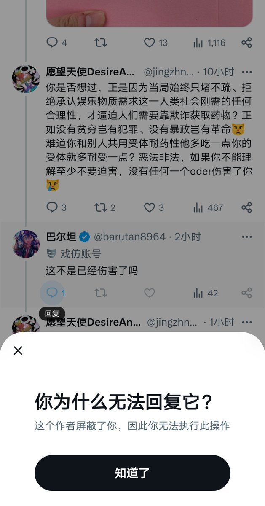

小橘春定（求愛性孤独）
@tatibana_sada
我想一个困惑于药物政策收紧的普通人听到这句话，内心的感受应该不亚于一个想移民美国当湾区码农的华人听到一个穆斯林说，我也想去美国好生一大堆孩子吃低保最后杀光异教徒占领美国，所以我们是一边的。

愿望天使DesireAngel
@jingzhny11
如果你觉得oder影响了你的正常用药想解决这个问题，你应该首先明白直接影响你用药的是药物政策和国家机关，然后不说支持，至少得理解药物对于oder来说和对你一样是必需品，然后合力而非切割；如果你还想要一个道歉，你要做的肯定不是直接发恶咒，并且招来的忠犬说不过就拉黑人也不拴绳😿 https://t.co/ZbLUqxKUxa